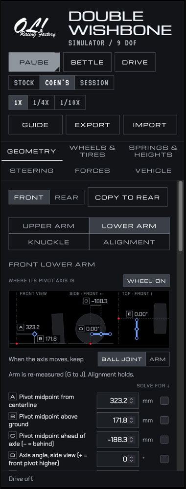
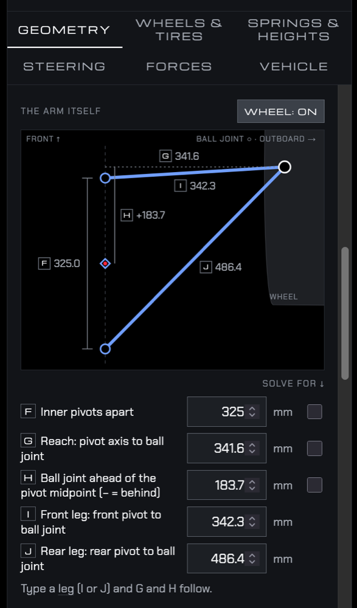
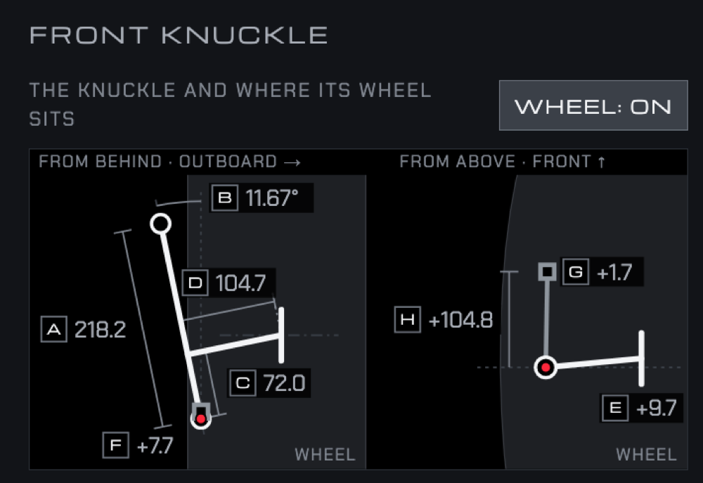
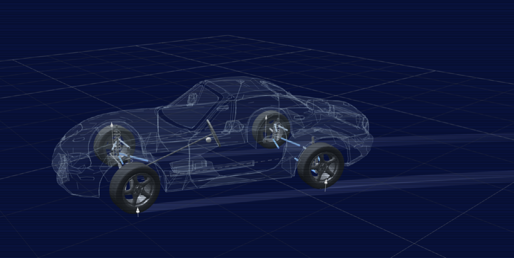
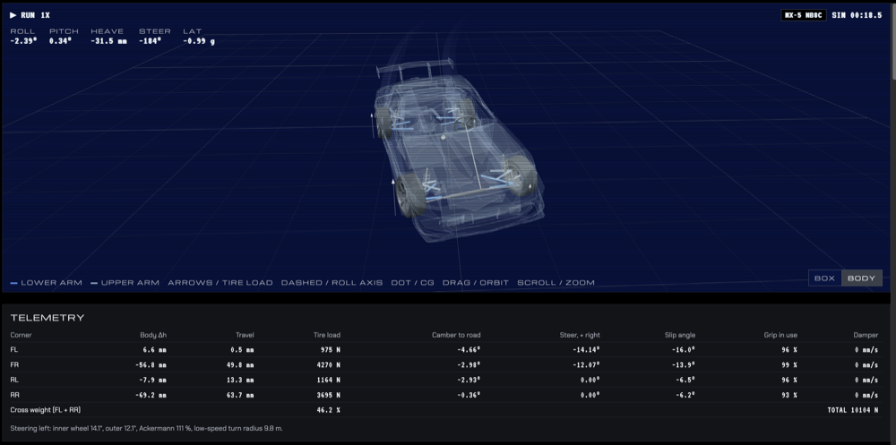

https://refriderator.github.io/Double-Wishbone-Simulator
I reworked the way users may input the geometric parameters to their car. It is more visually focused and I think allows the sim to apply to more vehicles. It also allows new degrees of freedom for each control arms inner pivot which allows for more realistic anti- squat and anti- dive.
The program does its own solving when variables are changed and will let the user know if limits are met or parameters where adjusted.
The DRIVE function now provides tire trails for better visualization and readouts, though is only really realistic and useful for steady state turning or step steering reaction rather than full driving dynamics as the simulator falls apart at high slip angles.
I hope to eventually be able to work out better tire data over placeholders.




